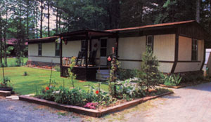
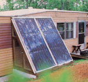
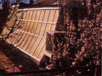
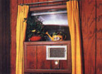

Economy Solar To Go
By the Mother Earth News editors
September/October 1985
A guide to improvements-some great and some small-that will make living in manufactured housing more comfortable.
The 1980 Census of Housing revealed that there were 4.1 million mobile homes in use in the United States. And the popularity of mobile homes has increased since then: They accounted for fully one-third of the single-family houses sold in this country in 1983. Unfortunately, thermal performance standards for such manufactured housing lag behind those of conventional site-built homes. This is despite federal legislation that charged the Department of Housing and Urban Development (HUD) with establishing minimum energy-use requirements for homes built after June 15,1976. Sadder yet, about 75% of the mobile homes in use today were constructed prior to that date, and thus may not be bound by any standards whatsoever.
The plain truth is that mobile homes use, on the average, twice as much energy for heating and cooling as do new, comparably sized conventional homes. On the other hand, they are affordable at a time when conventional housing is priced out of the reach of many people, and-better yet-they lend themselves to a number of modifications or improvements that can narrow and even eliminate the energy-efficiency gap, while en hancing the structure's appearance in the process. The following nine-page mini-manual illustrates these benefits by offering exciting examples of what some mobile home owners have done to better their lot.
A functional greenhouse
needn't be an expensive
project, as an innovative
New Mexico mobile
home owner relates on The
Greenhouse Solution .
Mother's research department "mobilized" its forces to produce a solar collector that cuts those winter heating bills!
Economy Solar... To Go!
You don't have to live in a mobile home to appreciate an uncomplicated and affordable source of supplemental heat, but those who do will find our staff designed add-on solar collector especially attractive, for a couple of reasons. First, its construction is simple and compatible with most any site: It rests on a stacked-block foundation, feeds warm air and returns it through any available window opening, and needn't be bolted to the house. It doesn't use a chimney, pump, storage tank, or other complicated paraphernalia. Second, it provides a temperate, daylighted, protected shelter for storage or seed germination, a welcome bonus where space is at a premium.
Before you start tearing into the ground with your spade, though, you might consider a few things. Most important, your home should have a south-facing window available to accept the collector's air exchange plenum. The lower sash of this opening will be permanently blocked, so don't plan on using the window for ventilation. Furthermore, if the opening isn't located in the room you want to heat, you'll have to run an inside duct to that area.
Also, there should be no obstructions-including coniferous trees-in the vicinity of the window. (Since this is a cold-weather heater, deciduous varieties growing a dozen yards or more distant shouldn't present a problem, because their bare trunks will cause little solar blockage.)
LOCAL TUNING
Start the project by figuring out what collector angle is best for your locale and situation. Generally, the tilt on a winter-only solar collector varies between 50° and 70° from horizontal, depending upon the latitude (northern areas require the more upright angles). Because the collector panels also serve as a lean-to storage shelter, they'll probably have to be fixed closer to the maximum angle to provide headroom. A 60° pitch, like ours, is a good compromise, since even a surface cocked 25° out of square with the sun's direct rays will absorb over 90% of the available energy.
With your face angle roughly established, check the siding panels around the window. Make certain there are no dryer vents, service hookups, or protruding casement frames that might get in the way of the flush-mounted collector framework, which will cover an area approximately 8' wide and 7' tall. Then, relying on our descriptions and illustrations as guides, gather your materials and prepare to assemble your collector.
DUCTS IN A ROW
The foundation consists of stacked 8" concrete blocks joined with Surewall surfacebonding cement (made by the W.R. Bonsal Co., P.O. Box 38, Lilesville, NC 28091, and available at contractors' supply houses) and set in a level, hand-dug footing trench. The number of courses will depend, naturally, on how high you need to position the collector platform and framework.
To economize on materials and provide a flush floor surface, we incorporated the coolair return duct right between the 2 X 4 joists that support the 3/4"-plywood floor. At its forward end, the duct feeds the two collector-panel inlets through a short connector. At the rear, it's tied in to the window plenum with a length of insulated-board duct. Notches cut at the front of the floor joists support the lower edge of each collector panel.
Because we wanted ambient lighting available to the upper sash of the window, we faced the stud-frame enclosure walls with Sun-Lite HP, a fiberglass-reinforced plastic glazing. A compact door allows access to the inside. The upper corners of the wall sections are joined together with a hollow, three-sided structural member that serves as a header and panel support, and a warm-air supply duct. Two openings cut into the face of that manifold are sealed to the collector-panel outlets with caulking . . . and a third hole at the bottom connects to the supply half of the window plenum through a second insulated duct.
The window plenum is simply a plywood box sized to fit in the sash opening and split into two chambers. The return side houses a closable air register, a filter, a 465-cfm squirrel-cage blower, and a line-voltage thermostat. The supply side merely connects to a 3" X 12" wall-mounted duct that runs through a partition and into the living area, where it's capped with a diffuser grille.
PANEL DISCUSSION
In order to keep maintenance to a minimum, we elected to build our collector panels using commercially made aluminum frame sections, available from Solar Components Corporation, P.O. Box 237, Manchester, NH 03105. Each 13' 4" extrusion costs about $40, and it takes four to make the two 4' X 8' boxes used in this project. The EPDM rubber channel gaskets and the Kallwall Sun-Lite HP .040" polymer glazing we used are from the same source. The 1/8" hardboard backing, the 3/4" foil-faced isocyanurate insulation board, the 1/2" Celotex Tuff-R, and the high-temperature flat black paint, silicone sealant, and fastening hardware can be purchased locally.
The design of the absorber surfaces is critical to the success of the collectors. MOTHER research staffer Clarence Goosen carried out an extended test program to analyze airflow characteristics in a controlled chamber environment (see News from Mother for details). The partition arrangement used in the panels shown here netted a laudable 68% efficiency level, which can be explained by the fact that it creates a symmetrical turbulence throughout the chamber area.
To prevent rainwater from leaking into the storage area beneath the collector panels, we fastened an 8-1/2' section of flashing beneath a horizontal siding joint on the house and formed it over the upper edge of the collector frames. Weather stripping between the collector wall framing and the house siding discourages leaks at those junctures too.
Wiring between the limit switch, the blower motor, the junction box, and the thermostat (see the schematic) complete the collector project. The thermostat works just like a standard furnace unit, except that the collectormounted limit switch won't let it turn on the blower unless the air in the panel chambers is at 110°F or greater. At night, the return air register can be closed to prevent drafts . . . but this should never be done when the blower is operating, since such a restriction could overload the motor.
In the summer, when the collector is stagnant, greenhouse shade netting or some other type of cover should be placed over the panels to protect the glazing and absorbers from overheating. But in the winter, let the sun shine in . . . your $575 investment will return about 10,000 Btu per hour, under ideal conditions. And that will put a crimp in any greedy furnace's lifestyle.
Illustrations:
Collector Panels
Collector Framework Plan View
Collector Framework and Floor
Wiring Schematic & Window Plenum
|
 Turn to A Roof-Over Retrofit to find out how one family beautified their mobile home and reduced winter and summer energy costs as well. |
 Below , read about an $8.98-per-square foot solar collector that helps heat the home and provides dry storage, too. |
 Woodstoves aren't limited to use in conventional houses... but see Woodstoves and Mobile Home Safety for scoop on safe installations before you buy. |
|
 A functional greenhouse needn't be an expensive project, as an innovative New Mexico mobile home owner relates on The Greenhouse Solution . |
 The plenum box houses the controls. |
|